Сначала рассмотрим верстку
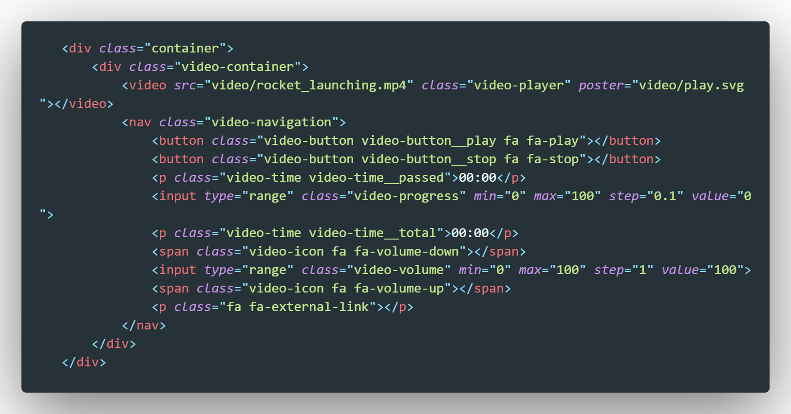Есть тег video которому мы задали свойство src и дали ему класс - video-player
Далее идет блок с навигацией. Здесь у нас две кнопки, затем input c типом range, а так же два параграфа которые выводят время текущее и всемя тотальное
Затем идут два спана которые являются иконками уровня звука, еще один input c типом range, он будет регулятором громкости. И наконец кнопка в виде тега p (параграф) который будет раскрывать наше видео на весь экран.
Теперь рассмотрим код JS. Рассматривать будем сегментами:
Первое что мы делаем - это создаем переменные для обращения DOM элементам.
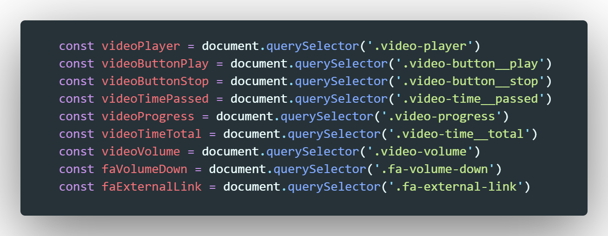Теперь напишем функцию, которая будет запускать и останавливать на плеер
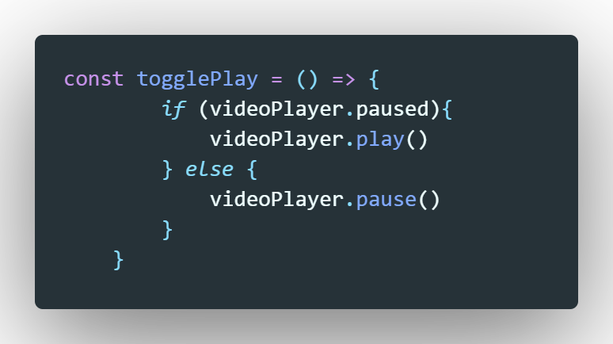В этой функции условие, если элемент videoPlayer стоит на паузе, тогда мы обращаемся в этому элементу и применяем к нему метод play(), иначе - мы применяем к нему метод pause()
Эту функцию мы повесим с помощью addEventListener по клику на два элемента:
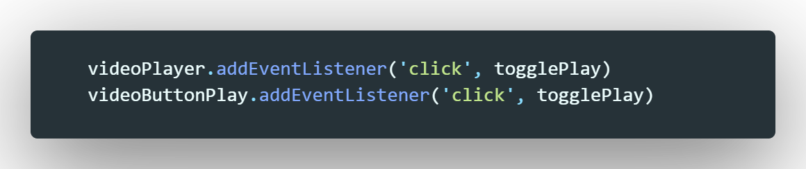Первый это сам плеер, а второй - это кнопка включения и выключения. НО!
Нам нужно что бы при нажатии на кнопку включения/паузы у нас менялась иконка. Длаться это будет с помощью смены класса. Вот как будет выглядеть эта функция:
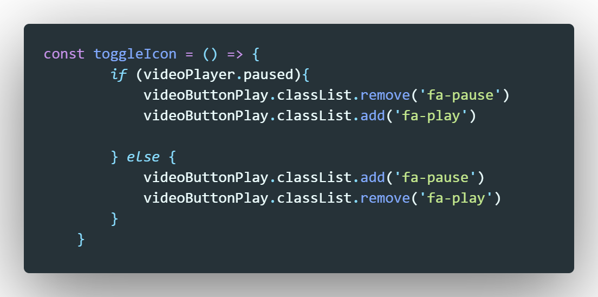Теперь повесим эту функцию на события плеера:
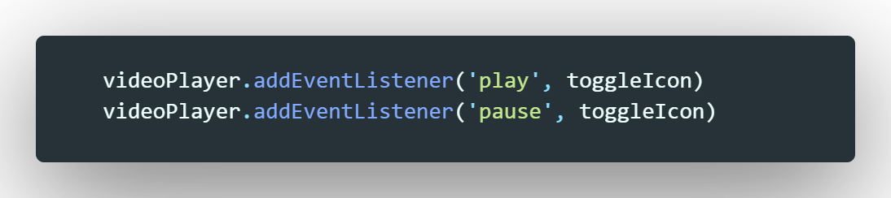Теперь рассмотрим как мы будем обрабатывать клик по нажатии на кнопку stop
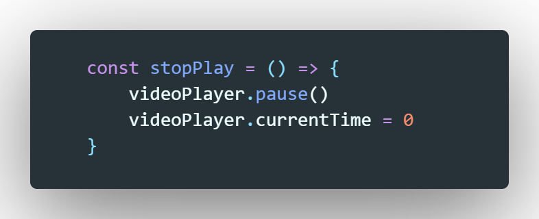Повесим эту функцию на собитые клика кнопки stop
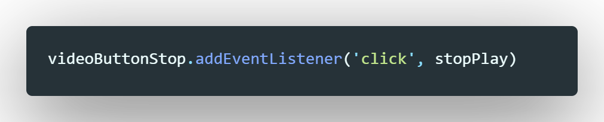Теперь расмотрим событие для плеера, которое называется timeupdate, т.е. что будет происходить, когда видео будет проигрываться
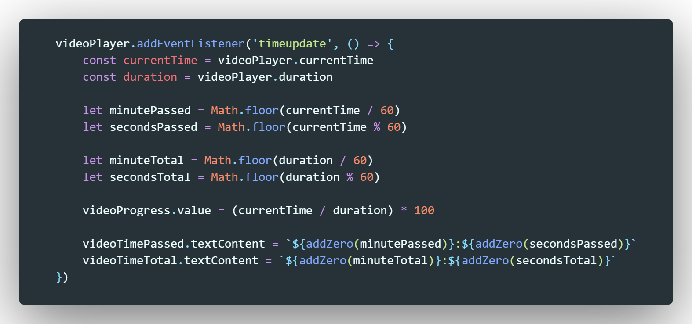Первое что мы делаем это объявляем переменные currentTime и duration. В currentTime мы помещаем значение времени в секундах текущего времени проигрывания. В durationмы помещаем значение тотального времени видео в секундах. Для наглядности можно вывести эти значения в консоль и посмотреть на них
Далее мы создаем с помощью оператора let четыре переменные которые будут содеражать в себе минуты и секунды значений currentTime и duration (получаем мы их математическим путем через деление и остаток (%), а так же при помощи метода floor, который округляет до целого числа получаемое значение)
что означает строчка:
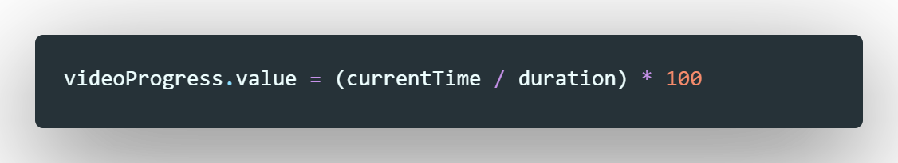нашему input c типом range мы присваиваем значение полученное через деление текущего времени на тотальное и помноженное на 100. В этом случае мы получаем процент времени текущего проигрывания.
После этого мы заполняем наши параграыф которые указывают время в минутах и в секундах с помощью строковой интерполяции
Теперь рассмотрим следующее событие:
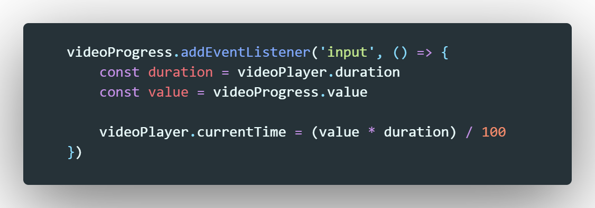На наш бегунок, который отвечает за перемотку видео мы вешаем слушатель события который называется input. Это событие срабатывает каждый раз, когда меняется значение input (в нашем случае это сдвиг бегунка)
Тут у нас опять математическое выражение. Сначала мы получаем два значения: тотальное время видео и текущее значение бегунка.
После этого мы присваиваем свойству currentTime видеоплеера, которое отвечает за текущее время проигрывания и присваиваем ему значение произведения значений переменных value и duration поделенное на 100
Для того что бы регулировать громкость видеоплеера можно использовать свойство - volume. Рассмотрим код:
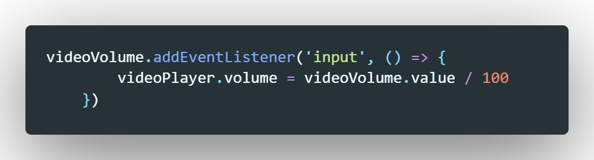На бегунок, который отвечает за звук, мы вешаем слушатель события - input и при каждом срабатывании этого события мы обращаемся к videoPlayer и присваиваем к свойству volume значение value бегунка поделенное на 100
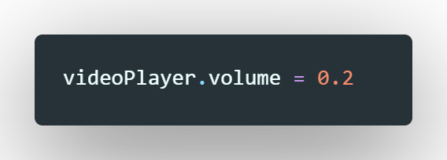В этой строчке мы устанавливаем значение звука плеера по умолчанию при открытии страницы. Так при открытии страницы нам надо установить значение бегунка в значение которое бы соответсвовало значения volume видеоплеера. Делается это так:
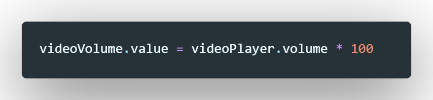Рассмотрим код:
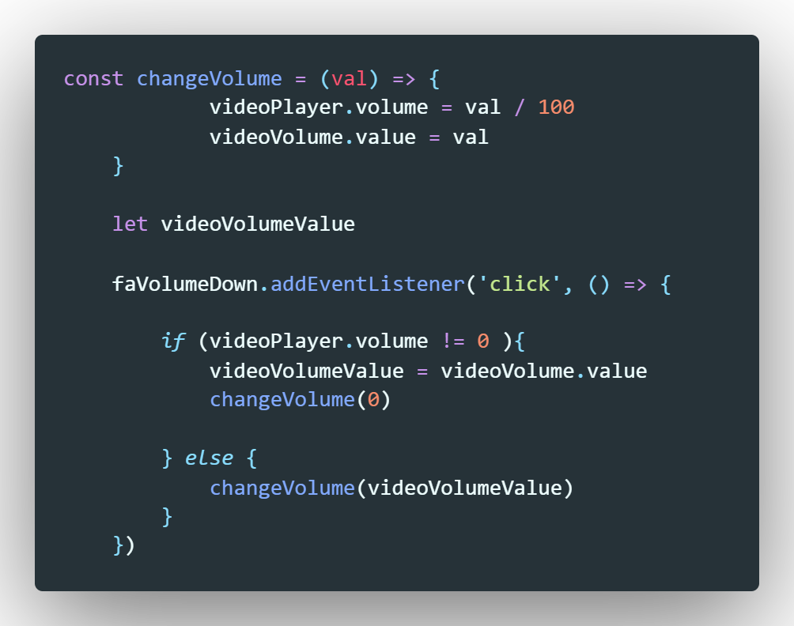Начнем с конца. Мы обращаемся к кнопке faVolumeDown и вешаем на нее слушатель сыбытия click. Внутри функции у нас условие:
Если громкость плеера НЕ РАВНА нулю, т.е. например имеет значение 0.5, тогда это значение мы записываем во внешнюю - глобальную переменную - videoVolumeValue. После этого мы сбрасываем значение volume плеера до нуля.
Если же иначе (т.е значение volume плеера равно нулю) тогда мы вызываем функцию changeVolume и на вход этой функции мы даем значение которое до этого записали в переменную videoVolumeValue.
Теперь рассмотрим что же делает эта функция? Ничего необычного она присваивает входящее значение и присваивает его к значению volume плеера поделянное на 100 и присваивает его к значению value бегунка.
Что бы развернуть видео на весь экран, тут все просто, на кнопку вешаем слушатель события click и по клику обращаемся к нашему плееру и применяем к нему метод - requestFullscreen
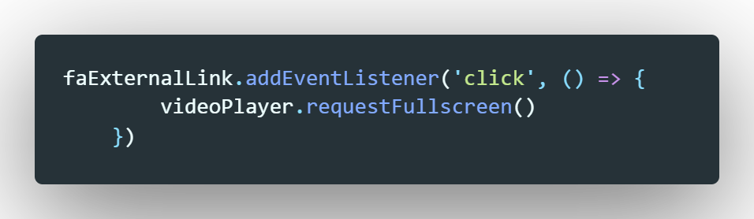Для изменения скорости воспроизведения используется свойство playbackRate
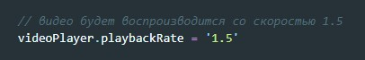